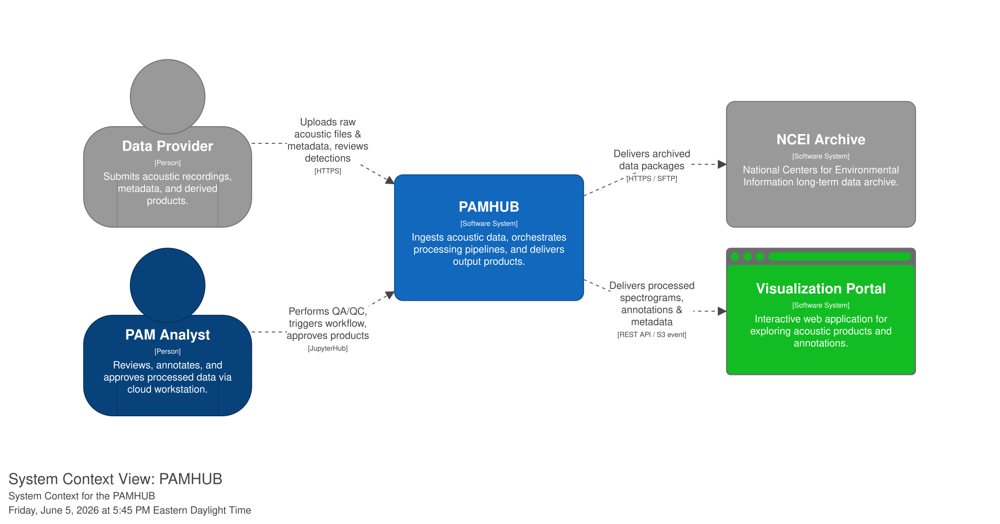
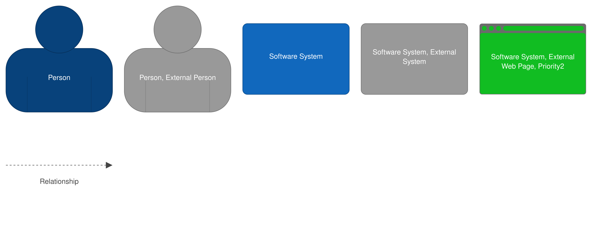
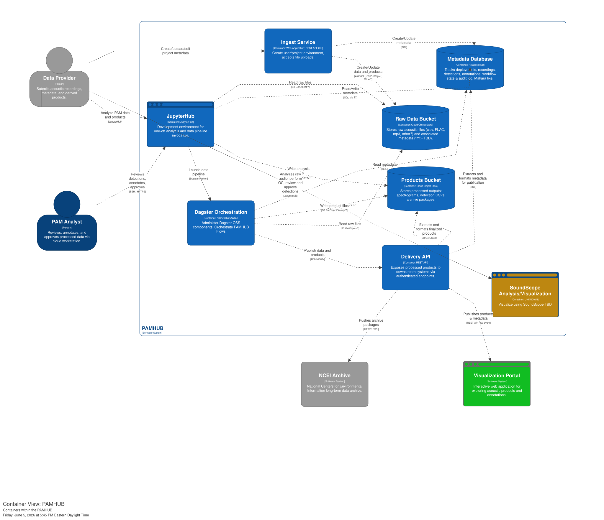
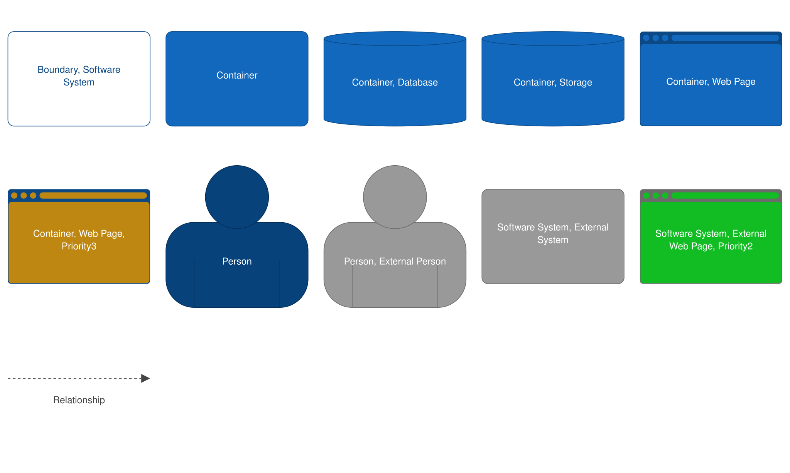
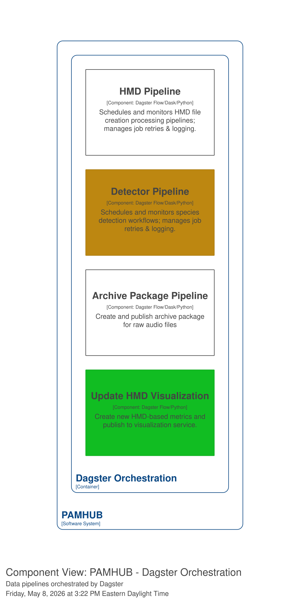
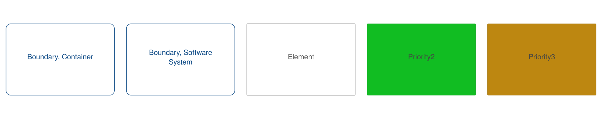

Architecture of the PAMHUB System
System Context


Containers within PAMHUB


Dagster Components


Note
These diagrams follow the C4 software diagramming conventions. Importantly, in these diagrams "Containers" are generic objects that "contain" functionality provided by software packages. They are simply a level of abstraction that allows for showing different levels of detail in different diagrams. THEY ARE NOT DOCKER CONTAINERS!
Use Cases
Table of Use Cases
Note
Original User Stories.
This file is not maintained. It has been decomposed into smaller stories or use cases below.
| Implementation Priority | UC ID | Use Case write up | Related Issues | UC Completion Status |
|---|---|---|---|---|
| 1 | uc-012 | Create project metadata | NA | Incomplete |
| 1 | uc-011 | QC check prior to data upload | NA | Incomplete |
| 1 | uc-005 | Upload raw audio | NA | Incomplete |
| 1 | uc-002 | Calculate spectograms and write to HMD files w PyPAM | NA | Incomplete |
| 1 | uc-007 | Quality control raw audio | NA | Incomplete |
| 1 | uc-001 | Archive at NCEI | NA | Incomplete |
| 1 | uc-013 | QC HMD files | NA | Incomplete |
| 2 | uc-004 | Visualize climatology | NA | Incomplete |
| 3 | uc-003 | Apply species detectors | NA | Incomplete |
| 3 | uc-009 | Integrate internal SoundScope visualization | NA | Incomplete |
| 3 | uc-014 | Archive spectogram/HMD files at NCEI | NA | Incomplete |
| 4 | uc-006 | Visualize other | NA | Incomplete |
| 4 | uc-008 | Publish detections to PACM and/or NCEI | NA | |
| 4 | uc-010 | Provide analysis environment to external PIs/Data providers | NA | Incomplete |
Data flow diagrams or other dynamic diagrams describing the use cases PAMHUB will address.